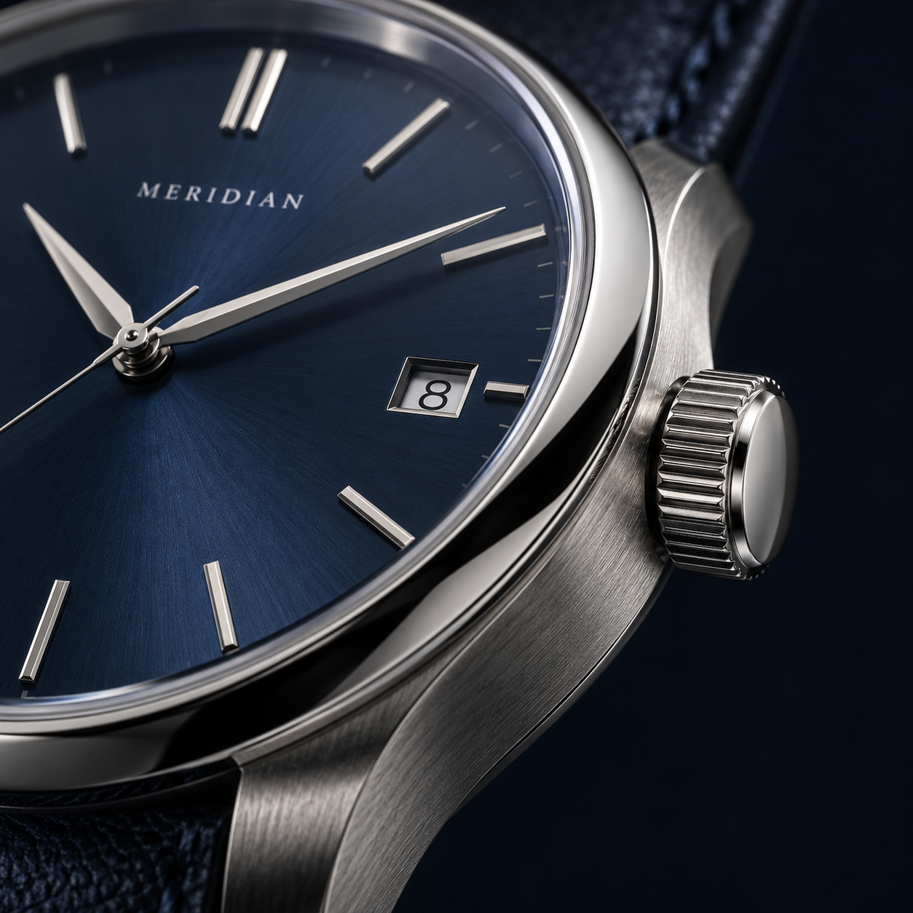

01 / 07
ORIGIN COLLECTION
ORIGIN 01
深海藍 · 自動機械腕錶
NT$ 18,800
以簡潔的刻度與細緻的錶盤紋理，保留時間原本的樣子。精鋼的俐落與皮革的溫度，陪你自在穿梭每一天。
40錶徑 / MM
自動機械上鍊
316L精鋼錶殼
數量
保留喜歡的款式，隨時回來比較。
腕錶規格 ＋
- 系列
- ORIGIN
- 錶徑
- 40 mm
- 機芯
- 自動上鍊機械機芯
- 錶殼材質
- 316L 不鏽鋼
- 鏡面
- 藍寶石水晶玻璃
- 錶背
- 透明展示底蓋
佩戴與保養 ＋
避免碰撞與強磁場。皮革錶帶請保持乾燥，以柔軟乾布擦拭錶殼；進行水上活動前請取下腕錶。
隨附內容 ＋
腕錶、收納錶盒與使用說明。

A CLOSER LOOK
細節，
不只在錶面。
從指尖觸碰的錶冠，到貼合手腕的弧度。每一個角度，都值得再靠近一些。
CONTINUE EXPLORING